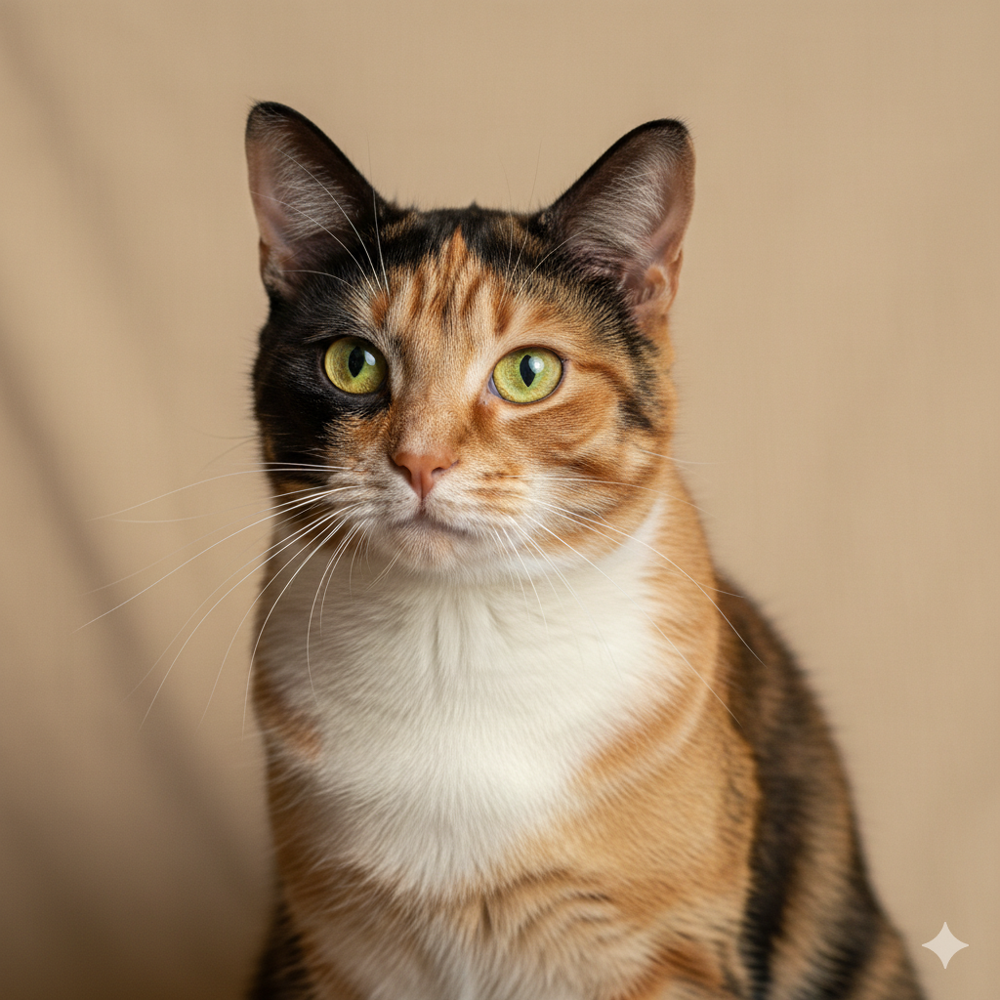

3 Mitos sobre Gatos que Você Precisa Esquecer 🐾

Por Plantas & Gatos — conteúdo prático para tutores e amantes de plantas
Os felinos domésticos convivem com a humanidade há mais de 9.000 anos, mas ainda carregam uma aura de mistério que alimenta inúmeras crenças populares. Essas ideias, transmitidas de geração em geração, muitas vezes não apenas distorcem nossa compreensão sobre esses animais fascinantes, como podem até mesmo prejudicar seu bem-estar.
Com base em evidências científicas e na experiência de veterinários especialistas, vamos desvendar três dos mitos mais persistentes sobre gatos — e revelar o que a ciência realmente nos ensina sobre nossos companheiros felinos.
🐱 Mito 1: "Gatos sempre caem de pé e nunca se machucam"
O que diz a ciência
É verdade que os felinos possuem uma habilidade extraordinária chamada "reflexo de endireitamento vestibular", descoberta pelo fisiologista francês Étienne-Jules Marey em 1894. Este mecanismo permite que gatos se reorientem no ar em apenas 0,125 segundos, utilizando:
- Sistema vestibular: órgão do equilíbrio localizado no ouvido interno
- Flexibilidade da coluna: 53 vértebras (13 a mais que humanos)
- Ausência de clavícula: permite maior mobilidade dos ombros
- Cauda como estabilizador: funciona como um leme aerodinâmico
A realidade perigosa
Estudos veterinários revelam dados alarmantes sobre a "Síndrome do Arranha-céu Felino":
Quedas mais perigosas:
- 2º ao 6º andar: altura insuficiente para o gato se posicionar adequadamente, mas suficiente para causar traumas graves
- Lesões mais comuns: fraturas de maxilar (20%), pneumotórax (15%), fraturas de membros (35%)
- Taxa de sobrevivência: embora alta (90%), 37% dos gatos necessitam tratamento cirúrgico
Quedas de grandes alturas:
Paradoxalmente, gatos que caem de alturas superiores a 9 andares apresentam menos ferimentos graves. A explicação: após atingir velocidade terminal (cerca de 100 km/h), eles relaxam o corpo, distribuindo melhor o impacto.
Prevenção essencial
- Instale telas de proteção: essencial em apartamentos acima do térreo
- Cuidado com janelas basculantes: podem causar estrangulamento
- Atenção ao "instinto de caça": pássaros e insetos podem distrair o gato e causar quedas
- Supervisão em varandas: mesmo com proteção, monitore sempre
🥛 Mito 2: "Gatos adoram leite e precisam dele para serem saudáveis"
A origem do mito
A associação entre gatos e leite remonta ao século XVIII, quando felinos eram mantidos em fazendas para controlar pragas e naturalmente tinham acesso ao leite fresco. Essa imagem romântica se perpetuou na cultura popular, mas ignora uma realidade biológica fundamental.
A verdade sobre lactose em gatos
Desenvolvimento da intolerância:
- Filhotes: produzem lactase (enzima que digere lactose) até 8-12 semanas
- Gatos adultos: 85% perdem gradualmente a capacidade de produzir lactase
- Consequência: lactose não digerida fermenta no intestino
Sintomas da intolerância:
- Diarreia (pode levar à desidratação)
- Gases excessivos
- Cólicas abdominais
- Vômitos
- Em casos graves: desequilíbrio da flora intestinal
Necessidades nutricionais reais
O que gatos realmente precisam:
- Água: 50-70ml por kg de peso corporal diariamente
- Proteína animal: 26% da dieta seca (versus 18% para cães)
- Taurina: aminoácido essencial encontrado apenas em tecido animal
- Ácido araquidônico: ácido graxo vital presente em gorduras animais
Alternativas seguras:
- Leite sem lactose específico para gatos: disponível em pet shops
- Caldos de carne sem tempero: ocasionalmente
- Água sempre fresca: a melhor opção para hidratação
Sinais de boa hidratação
Verifique se seu gato está bem hidratado através do "teste da prega": levante gentilmente a pele do pescoço; ela deve voltar ao normal em menos de 2 segundos.
🌙 Mito 3: "Gatos são animais frios, independentes e não criam vínculos"
A ciência dos vínculos felinos
Pesquisas recentes em comportamento animal revolucionaram nossa compreensão sobre os laços afetivos dos gatos:
Estudo da Universidade do Oregon (2019):
- Teste de apego seguro: 65% dos gatos demonstraram apego seguro aos tutores
- Comparação: percentual similar ao encontrado em cães (58%) e crianças humanas (65%)
- Metodologia: gatos foram separados dos tutores e depois reunidos, sendo observados seus comportamentos
Formas únicas de demonstrar afeto
Os gatos expressam carinho de maneiras sutis, frequentemente incompreendidas:
Sinais de afeto felino:
- Ronronar: frequência de 20-50Hz, com propriedades terapêuticas comprovadas
- Piscar lento: equivalente ao "beijo de gato"
- Amassar com as patas: comportamento mantido da infância
- Mostrar a barriga: demonstração de confiança extrema
- Seguir o tutor: comportamento territorial positivo
- Trazer "presentes": instinto de provisão do grupo familiar
Personalidades individuais
Estudos identificaram cinco tipos principais de personalidade felina:
- Neurótico: ansioso, inseguro
- Extrovertido: ativo, vigilante
- Dominante: territorialista, agressivo
- Impulsivo: errático, imprudente
- Agreável: amigável, confiante
Construindo vínculos saudáveis
Estratégias baseadas em evidências:
- Respeite o espaço pessoal: deixe o gato iniciar o contato
- Estabeleça rotinas: gatos são criaturas de hábito
- Ofereça enriquecimento ambiental: arranhadores, brinquedos, pontos altos
- Use reforço positivo: petiscos e carinho quando o comportamento é desejado
- Crie "zonas seguras": espaços onde o gato pode se refugiar sem ser incomodado
Tempo para criar vínculos:
- Gatos filhotes: 2-4 semanas para adaptação
- Gatos adultos: 3-6 meses para confiança completa
- Gatos resgatados: pode levar até 1 ano, dependendo do histórico
✨ O Impacto dos Mitos na Saúde Felina
Desfazer esses mitos vai muito além da curiosidade: tem implicações diretas na saúde e bem-estar dos nossos companheiros felinos.
Consequências dos mitos persistentes:
- Acidentes evitáveis: milhares de quedas poderiam ser prevenidas anualmente
- Problemas digestivos: tratamentos desnecessários por intolerância à lactose
- Abandono: expectativas irreais sobre comportamento felino levam à entrega de animais
Benefícios do conhecimento científico:
- Prevenção efetiva: medidas de segurança baseadas em evidências
- Nutrição adequada: dietas formuladas para necessidades reais
- Relacionamento harmonioso: compreensão dos sinais de comunicação felina
A ciência moderna nos oferece uma visão fascinante e precisa sobre os gatos. Quanto mais compreendemos suas necessidades reais — baseadas em evidências, não em folclore — melhor podemos oferecer-lhes uma vida plena, saudável e verdadeiramente feliz.
Lembre-se: cada gato é um indivíduo único, com personalidade e necessidades específicas. A observação atenta e o respeito às suas características naturais são as chaves para uma convivência extraordinária entre humanos e felinos.
← Voltar para o blog